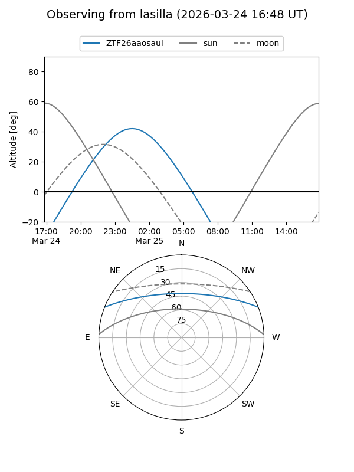
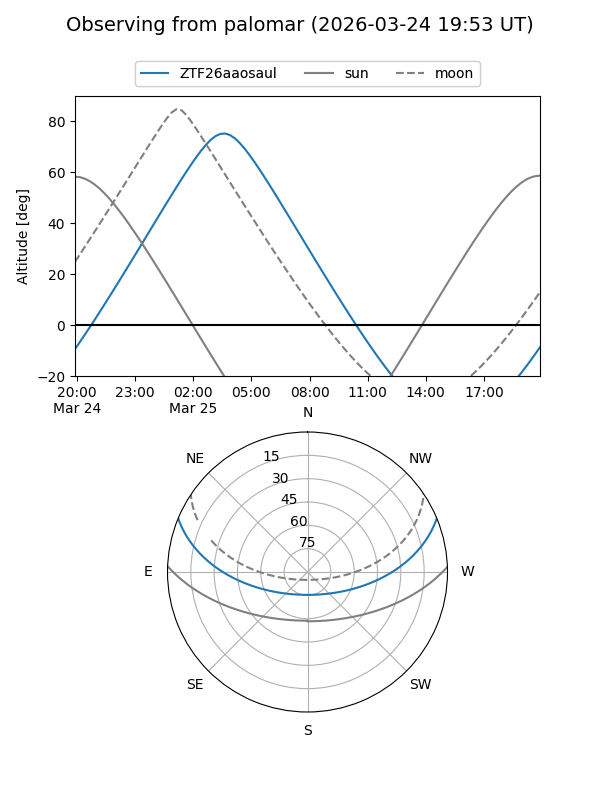

ZTF26aaosaul
Target ZTF26aaosaul at 2026-03-25 04:51
Aliases and brokers:
FINK: link
Lasair: link
ALeRCE: link
alt names
ZTF26aaosaul (ztf,fink_ztf)
Coordinates:
equatorial (ra, dec) = 118.9005,+18.71791
equatorial (HMS+DMS) = 07:55:36.12,+18:43:04.49
galactic (l, b) = (202.5800,+22.28714)
Flags:
Photometry:
last ztfg=16.20
1 ztfg detections
Lightcurve
Visibility


Additional plots